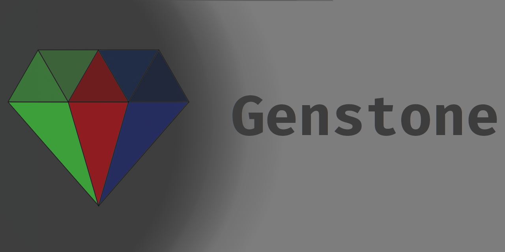

|
Genstone
A personal C development framework which creates a consistent, configurable cross-platform abstraction layer for a variety of applications
|
|
Genstone
A personal C development framework which creates a consistent, configurable cross-platform abstraction layer for a variety of applications
|

Genstone is intended to provide a solid series of application-programming utilities which:
Genstone at the moment only supports Linux and macOS "officially" although at the time of writing many modules do compile on Android, BSD and iOS. Windows support is on the backburner as it would require quite drastic changes to several module backends and has caused issues with CI in the past.
Genstone uses Javadoc-style docstrings to document functions, macros, structures and other aspects of the public API. You can view these directly in the headers, generate local docs using make docs, or view the latest documentation build on Github pages at https://th3t3chn0g1t.github.io/Genstone/ (Recommended).
Genstone uses a configurable system of Makefile modules to build, this also applies to integrating submodule building.
The base Makefile in the project root tries to build the active sandbox project be default (See [Makefile Options] for information on configuring this sandbox project).
Documentation of most user-oriented targets is available through make help. This is provided through ### docstrings in Makefiles. These can be specified in user modules in the following format:
make list will list the targets due to be built for all (the default target) based on configuration.
The codebase will only build with clang, with some modules being broken prior to clang-13. This is due to a number of reasons but primarily it allows us to have a consistent idea of what compiler features and extensions are available, and the build interface is consistent. We also now use Polly and OpenMP in release builds both of which should be available from the same place you got clang.
On some versions of macOS, the provided clang version does not support some of the features used in Genstone. To fix this - install the Homebrew version of clang with the features enabled using brew install llvm and adding a link to /usr/local/Cellar/llvm/{VERSION}/bin/clang in your path (with ln -sf /usr/local/Cellar/llvm/{VERSION}/bin/clang /usr/local/bin/clang-13 or the like). Then specify the compiler in toolchain.mk or use OVERRIDE_COMPILER on the command line. Homebrew can be gotten from brew.sh.
The default configuration should build a sandbox project, so after a fresh clone just run make. (Configuration may be required for adding additional projects). For cleaning the project, make clean should remove most artifacts.
Additional build targets exist for building IDE configuration files (ideconf) and documentation (docs). These targets' settings are also controlled by values in build/config.mk. ideconf will overwrite existing configuration and does not behave differently on subsequent invocations (i.e. calling once and then modifying is recommended).
Documentation requires Doxygen to be installed and available on the PATH.
Variables to influence the way an application or module is built with Genstone.
These options can be overriden with a variable OVERRIDE_keyname in the executing environment. e.g. OVERRIDE_LINKER=gold make.
Set options for the build process itself (e.g. for cross-compilation) in build/config.mk amd build/toolchain.mk, the file from which these options are sourced can be changed with OVERRIDE_CONFIG. All variables are commented to explain their purpose and possible values. The more commonly used options are toward the top of the files.
Setting in-code options can be done via. -D flags set via. the config Makefile.
| Name | Values | Default | Description | Notes |
|---|---|---|---|---|
PLATFORM | DWN LNX | Determined by Makefile | The target platform for the compilation | Do not mix platforms in a binary |
MODE | DEBUG RELEASE | Determined by Makefile | The target output optimization mode for compilation | It is usually prefereable to set via. the BUILD_MODE key in config.mk to avoid missing mode-specific build operations |
GEN_TOOLING_DEPTH | Any valid array size | 64 | The maximum depth of a tooled call stack | Is used to initialize a thread-local stateful buffer |
GEN_FREQ_PROFILE_MAX | Any valid array size | 64 | The maximum number of frequency profilers | Is used to initialize a thread-local stateful buffer |
GEN_PATH_VALIDATION | ENABLED DISABLED | ENABLED | Whether to validate paths passed to genfs functions with gen_path_validate | Does not affect the presence of gen_path_validate |
GEN_CALC_COMMON_TYPES | ENABLED DISABLED | ENABLED | Enables the default definition of common vector and matrix types in gencalc | |
GEN_FS_FILEWATCH_USE_SYSLIB | ENABLED DISABLED | ENABLED | Whether to use the system library where implemented to get filewatch functionality | Disabling may make results more consistent across platforms as the alternative uses standard utilities |
GEN_EXIT_PROC | Any statement. Should not end in a semicolon | abort() | The statement to be exected when a fatal program error is encountered | This statement should exit program runtime in all cases - application may be in an unstable state if a fatal error does not result in closure |
GEN_GFX_FRAMES_IN_FLIGHT | Any number greater than zero | 3 | The number of frames which can be processed concurrently while the GPU handles previous inbound frames | Large values may cause latency issues, and smaller values may cause stuttering |
 1.8.17
1.8.17